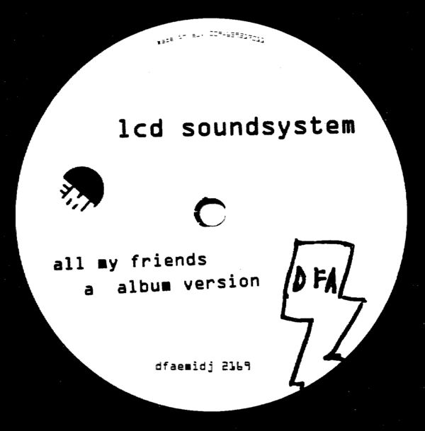

listening to music.
It was either this or watching films but I was more inclined at the beginning of this assigment to add a song to this project. In the impossible task of deciding which song to use, I randomly picked one from a personal playlist of favourite songs. I have listen to this song in repeat while doing this assigment and now I don't want to listen to it anymore. I think I just want now to sit by myself and go watch a movie. Anyway, this song is called...
all my friends
A song by LCD Soundsystem , from the album "Sound of Silver" , released in May 28, 2007 and written by Pat Mahoney, James Murphy and Tyler Pope, on the DFA records label.
7:42
(minutes of lenght in the album version)
4:19
(minutes of lenght in the video edit)
67M
(number of Spotify streams)
-------------------------------------------------------------------------------------------------------------------------------------------

That's how it starts
We go back to your house
You check the charts
And start to figure it out
And if it's crowded, all the better
Because we know we're gonna be up late
But if you're worried about the weather
Then you picked the wrong place to stay
That's how it starts
And so it starts
You switch the engine on
We set controls for the heart of the sun
One of the ways we show our age
And if the sun comes up, if the sun comes up, if the sun comes up
And I still don't wanna stagger home
Then it's the memory of our betters
That are keeping us on our feet
You spent the first five years trying to get with the plan
And the next five years trying to be with your friends again
You're talking 45 turns just as fast as you can
Yeah, I know it gets tired, but it's better when we pretend
It comes apart
The way it does in bad films
Except the part
Where the moral kicks in
Though when we're running out of the drugs
And the conversation's winding away
I wouldn't trade one stupid decision
For another five years of life
You drop the first ten years just as fast as you can
And the next ten people who are trying to be polite
When you're blowing eighty-five days in the middle of France
Yeah, I know it gets tired, only where are your friends tonight?
And to tell the truth
Oh, this could be the last time
So here we go
Like a sales force into the night
And if I made a fool, if I made a fool, if I made a fool
On the road, there's always this
And if I'm sewn into submission
I can still come home to this
And with a face like a dad and a laughable stand
You can sleep on the plane or review what you said
When you're drunk and the kids look impossibly tanned
You think over and over, "Hey, I'm finally dead"
Oh, if the trip and the plan come apart in your hand
You can turn it on yourself, you ridiculous clown
You forgot what you meant when you read what you said
And you always knew you were tired, but then
Where are your friends tonight?
Where are your friends tonight?
Where are your friends tonight?
If I could see all my friends tonight
If I could see all my friends tonight
If I could see all my friends tonight
If I could see all my friends tonight
-------------------------------------------------------------------------------------------------------------------------------------------
"So, then, in celebration of paradoxes. "All My Friends" is happy and it's sad. It's naive, but also disillusioned. It can make you feel twenty again. It makes you feel forty before your time. It makes you feel twenty and forty at once. It spirals into drug-fueled escapism, and it spirals into nostalgia. It's mature. It's the sound of sobering up. It's the song you play as the party peaks. It's the song you put on headphones when you walk home in the early hours of the morning, and some nights you triumphantly reminisce about all the experiences of your life, but maybe the edges are haunted and just as you step up to your front door and Murphy's last refrain echoes "If I could see all my friends tonight" you also know you're searching, too, that you feel all the dejection and isolation that've been as much a part of these last thirteen years as a new online version of community, or as much as anything else. It's a song about 1987 and 1997 and 2007 and probably 2017. Even weighed down by all of this, it still moves. And because we have no other option, because this is our new millennium life: We still move, too."
stereogum.com review on September 2013.